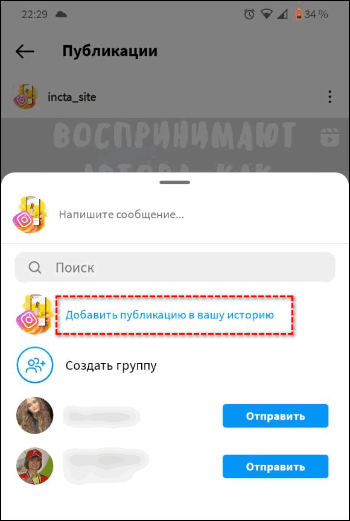
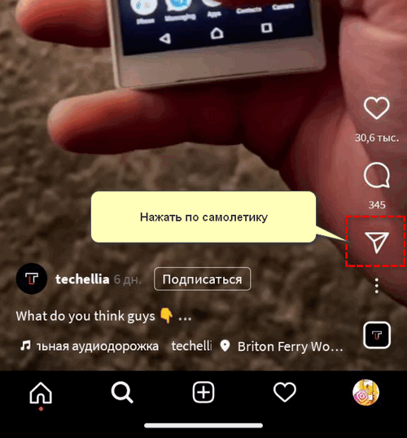
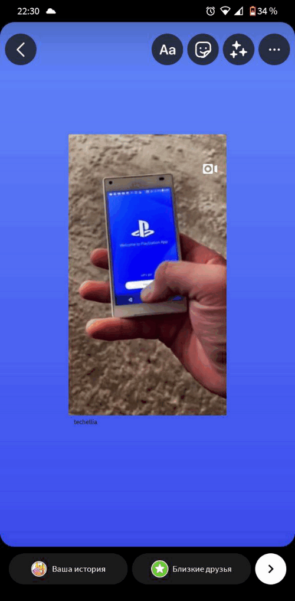
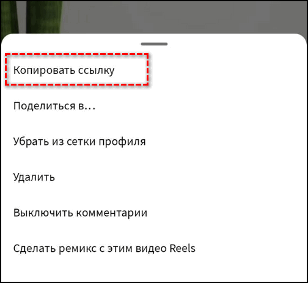
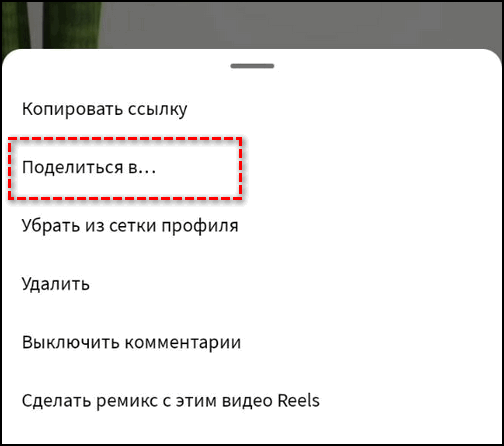

Как опубликовать Рилс в Историю Инстаграма

Рилс добавить в Историю Инстаграма* возможно после его размещения в Ленте. Таким образом пользователь может поделиться своим контентом на более широкую публику, собрать дополнительные просмотры и привлечь к контенту.
Поделиться своим видео в Рилс Инстаграма*
Добавить видео Reels в Историю не так сложно: под каждой публикацией находится значок в виде «самолетика», где появляется вариант: «Поделиться Reels в Истории».
Как отправить свои Рилс в Истории:
- Зайти в профиль – перейти к недавно размещенному Reels.
- Нажать по значку самолетика – «Поделиться в Истории».

- Появится холст на котором будет размещено видео.
- Добавить текст или другие элементы редактирования.

- Отправить.
Размещая таким образом, видео будет на автоматическом воспроизведении. Зрители, которые увидят запись, смогут её посмотреть через Stories. Или, нажав по миниатюре – перейти к изначальной записи.
Рассказать о чужом видеоклипе
Чужой Рилс добавить в Историю Инстаграма* возможно таким же образом: нажать по самолетику и выбрать соответствующий вариант. Добавляя запись, снизу появится ссылка на автора исходного поста. Загружаем чужие Рилс в Stories:
- Зайти в Ленту – выбрать недавно опубликованную запись.

- Нажать под ней «Поделиться» - отправить видеоклип в Историю.

Пост также будет на автоматическом воспроизведении. Если зритель нажмет по такой записи – он сможет перейти к оригиналу: оставить комментарий или лайк.
Способы как поделиться Рилс в Инстаграме*
Есть другие способы, как репостнуть Рилс в Сторис Инстаграма* или отправить в другую социальную сеть.
- значок «самолетика» - отправить в личные сообщения. Получатель увидит миниатюру, с помощь которой можно перейти к оригиналу;
- отправить ссылку. Скопировать URL, чтобы отправить другому пользователю;
- воспользоваться функцией: «Поделиться в», чтобы перенаправить в другое приложение.
- Перейти к Reels – нажать сверху по трем точкам.
- Копировать ссылку – получить URL.
- Отправить в сообщении или в другую социальную сеть.
Получатель увидит ссылку, с помощью которой он сможет перейти к публикации и посмотреть её в оригинале. Но она может не открыться, если пользователь не зарегистрирован в Инстаграме* или у него не установлено приложение.
Отправить ссылку в сообщениях
Еще один вариант, как поделиться Reels – передать друзьям в сообщении. Это может быть как отдельная ссылка, так и миниатюра. Как отправить URL:
- Перейти к публикации – нажать три точки сверху: «Копировать ссылку».
- Открыть Директ – перейти к выбранному чату.

- Нажать по строке ввода – Вставить.
- Отправить ссылку.
Второй вариант, как отправить в Директе:
- Перейти к публикации – нажать снизу по значку «самолетика».
- Отправить в сообщении – выбрать получателя.
- Подтвердить отправку.
Получатель увидит в сообщении миниатюру и сможет перейти к оригинальной публикации.
Рассказать о Рилс в других социальных сетях
Поделиться Рилс можно не только в Сторис, но и отправить в другие социальные сети. Если на смартфоне есть другие социальные сети, то пользователь может перенаправить свои публикации. Как это сделать:
- Зайти в Инстаграм* – выбрать запись Рилс.
- Нажать сверху три точки: «Поделиться в».

- Выбрать социальную сеть, куда нужно отправить.
- Появится окно с другим приложением – добавить описание и опубликовать.
Можно перенести запись в Вконтакте, Пинтерест, отправить в Телеграме. Пользователь сможет проверить публикацию после размещения, если перейдет в сервис.
Также, зрители увидят оригинал записи и смогут её посмотреть. Если поделиться ссылкой, то получатель увидит URL, с помощью которого можно перейти в социальную сеть.
Если ссылка с Рилс не открывается
Страница с Reels может не открываться, если произошла внутренняя ошибка сервиса или у пользователя не включен этот раздел до конца. К примеру, если в профиле есть кнопка просмотра Рилс, но нет записи – ссылки могут не открываться. Другие причины, почему не работает ссылка на Reels:
- видео с настройками конфиденциальности. Или аккаунт, откуда отправили клип, закрыт параметрами приватности;
- автор Рилс удалил запись из профиля;
- у пользователя не работает Reels;
- ошибка с подключением к сети;
- временные сбои.
Последний вариант – это также проблемы с подключением к интернету, которые могут появляться из-за блокировок.Если пользователь удалил запись из профиля, то публикация не откроется и у отправителя.